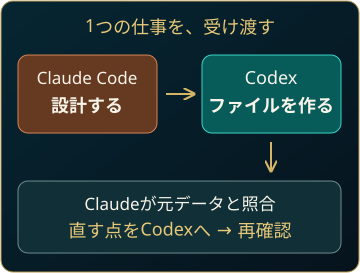
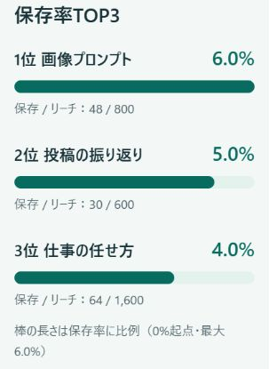
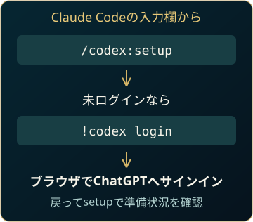
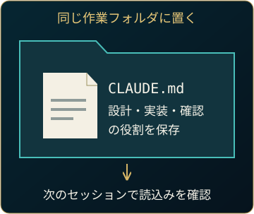
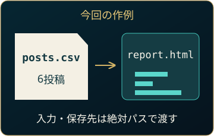
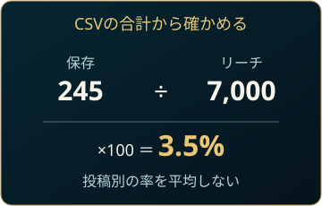
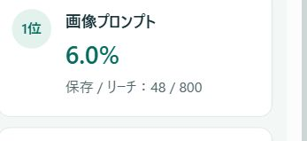

いそっち式 AI社員のつくり方
解説動画
動画を受け取り次第、掲載します。
ChatGPTとClaudeを行き来して、同じ説明をしている人へ。2つをつなぎ、SNSレポートの作成から修正まで任せてみます。
実際に手を動かすのはCodex。別々に答えをもらうより、仕事を受け渡せるコンビにするのがいいんです。


Claude CodeにCodexを追加
PCでClaude Codeを開きます。
準備と追加コマンドを開く
Claude Code・ChatGPTアカウント・Node.js 18.18以降を用意します。未導入ならClaude Codeの公式導入手順へ。すでにCodexを使っていれば、同じ端末の認証を利用できます。
Claude Codeの入力欄へ、上から1つずつ送信します。インストール先は自分用／プロジェクト用／このフォルダだけから選び、確認内容を読んで進めます。
/plugin marketplace add openai/codex-plugin-cc/plugin install codex@openai-codex/reload-plugins次のコマンドで準備状況を確認します。Codex未導入なら案内に沿って準備し、未ログインなら下のログインへ進みます。
/codex:setup
ログイン・使用量・止まったとき
!codex login開いたブラウザでChatGPTのアカウントにサインインし、Claude Codeへ戻って/codex:setupをもう一度実行します。認証情報をチャットへ貼る必要はありません。
Codex側にも利用上限があります。分担でClaude側の作業を減らせても、総使用量が必ず減るわけではありません。利用できるモデル・枠は自分の契約と画面で確認してください。
コマンドが出ない場合は再読込みか新しいセッションを試し、/pluginのエラーを確認。長い処理は/codex:statusで状態、終わったら/codex:resultで結果を確認します。止めるときは/codex:cancel。
毎回の自動検査を追加するreview gateは任意です。/codex:setup --enable-review-gateで有効、/codex:setup --disable-review-gateで無効。長いループで使用量が増える場合があるため、作業を見守れるときに使います。
次回も同じ分担で動かす

指示を送るだけで終わらず、保存先と読込みまで確かめます。
役割分担の指示文を開く
作業するフォルダをClaude Codeで開いて送ります。既存ルールと矛盾する場合は、内容を確認してから保存します。
この作業フォルダのルールとして、次の役割分担をCLAUDE.mdへ保存してください。既存の内容があれば保持し、矛盾があれば保存前に教えてください。 ・依頼を受けたら、まずClaude Codeが目的・入力・完成条件を整理する。 ・設計が決まったら、実装やファイル作成はCodexプラグインのcodex:codex-rescueへ渡す。 ・Codexには、作業フォルダ・入力・変更対象・保存先をすべて絶対パスで渡す。 ・Claude Codeが元データと完成ファイルを読み、計算と表示を確認する。 ・問題があれば、具体的な修正点をCodexへ渡し、直ったファイルを再確認する。 ・完成ファイルの場所、確認したこと、残った問題を最後に報告する。 ・終わらない処理は放置せず、状態を確認して報告する。 保存後にファイルを読み返し、保存先を教えてください。新しいセッションでは、同じフォルダを開き、/context allでこのファイルが読み込まれたことを確認します。
6投稿をレポートにする

展開したらguide.htmlを開きます。練習CSV・完成見本・指示文を同梱。
作成の指示文と進め方を開く
- 展開した
ai-team-practiceフォルダをClaude Codeで開きます。 - フォルダの絶対パスをコピーし、下の〈作業フォルダの絶対パス〉をすべて置き換えます。Windowsならエクスプローラーでフォルダを開き、アドレス欄からコピーできます。
- 指示を送信。Claudeの設計→Codexへの委譲→実ファイルの確認を追います。ファイルが見つからない場合は、実際の作業場所・入力・保存先を絶対パスで再指定します。
作業フォルダ：〈作業フォルダの絶対パス〉 入力：〈作業フォルダの絶対パス〉/posts.csv 出力：〈作業フォルダの絶対パス〉/report.html この練習用CSVから、SNS投稿の振り返りレポートをHTMLで1つ作ってください。 まずあなたが設計を考え、実装はCodexプラグインのcodex:codex-rescueへ渡してください。 完成条件： 1. 全6投稿の合計リーチ、合計保存、全体保存率を表示する。 2. 全体保存率は合計保存÷合計リーチ×100。投稿別保存率の単純平均にしない。 3. 保存率TOP3と、全投稿の一覧を表示する。保存率は小数第1位まで。 4. 「練習データ（実績ではありません）」と明記する。 5. スマホとPCで読める。外部ライブラリは使わない。 6. posts.csvとsample/以下は変更しない。架空の実績や文章を足さない。 委譲時は作業フォルダ・入力・保存先を絶対パスで明示してください。 Codexの作業後、あなたがCSVから再計算し、実際のreport.htmlを読み、可能ならブラウザ表示も確認してください。 差があればCodexへ直す点を渡して再確認。完成後はファイルの場所と確認結果、未確認の点を報告してください。
作業後はフォルダのreport.htmlをダブルクリックしてブラウザで開きます。同梱の完成例はsample/report.htmlです。自分の出力と見比べられます。
数値と見た目を分けて確認
相互にチェックできるのがいいんです。合計と順位を確かめて、TOP3を横棒へ変えます。


横棒に変える指示文を開く
同じレポートを直します。数値は変えず、比較しやすい見た目へ。パスをすべて置き換えて送ります。
作業フォルダ：〈作業フォルダの絶対パス〉 対象：〈作業フォルダの絶対パス〉/report.html 元データ：〈作業フォルダの絶対パス〉/posts.csv 保存率TOP3を、数値の大小がひと目で分かる横棒グラフへ変えてください。 順位・投稿名・保存数・リーチ・保存率はそのまま残します。棒は0%起点、長さは保存率に比例させ、今回の最大6.0%を基準にします。 ほかの集計・表・元CSVは変えないでください。 あなたが変更方針を整理し、実装をcodex:codex-rescueへ渡してください。作業場所と対象は絶対パスで渡します。 修正後、実ファイルを開き直し、TOP3が6.0%・5.0%・4.0%、全体保存率が3.5%のままか確認し、棒の長さ・スマホ表示も確認してください。
まずはこの6投稿で1回。できたら、自分の集計用CSVへ置き換えてみてください。
次は、SNSの収益化の流れへ
投稿の集計を任せられたら、次はSNSをどう収益につなぐか。そこを7日間の音声で学ぶ案内を用意しています。
案内ページで内容・購入条件をご確認ください。